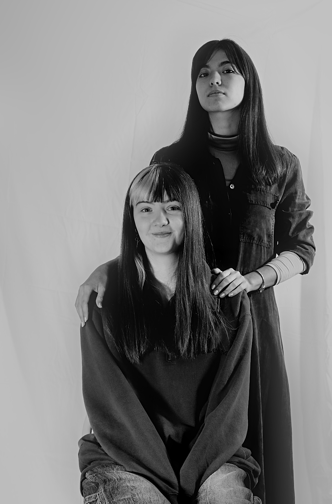

I love taking photos as a hobby, mst likely in vacations, but I also experimented with some photo classes ! This is an attempt at composition.
This is an exercise at architecture and motion blur that I am particularly proud of.
This photo is a test where we had to ‘illustrate’ a generated poem on internet. This one was about silence.
Here I had to do an object photo. I chose this figure because I wanted to try some visual storytelling.

This portrait was taken to be exhibited for 2 weeks in the university’s hall as part of the photography course. I took a first photo in the first class that I wanted to work on as I really liked the idea. Then, I asked two other class comrades to pose for me and I directed them on their pose.
In the foreground, there is a woman looking thoughtfully at us, but we cannot tell what she is feeling : I wanted her to feel mysterious.
Behind her, the other woman is looking at us for her height, intimidating :she is angry but she tries to hide it.
The white sheet seems organized and clean in the background, but as you lower your gaze, you can see that it is becoming jumbled : are they hiding a secret, or a somber backstory ? Finally, I kept the shadow of the standing woman, looming on the sheet, as if there was a ghost trying to retake its place in the photo...